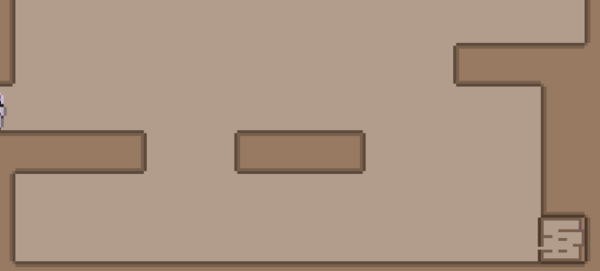
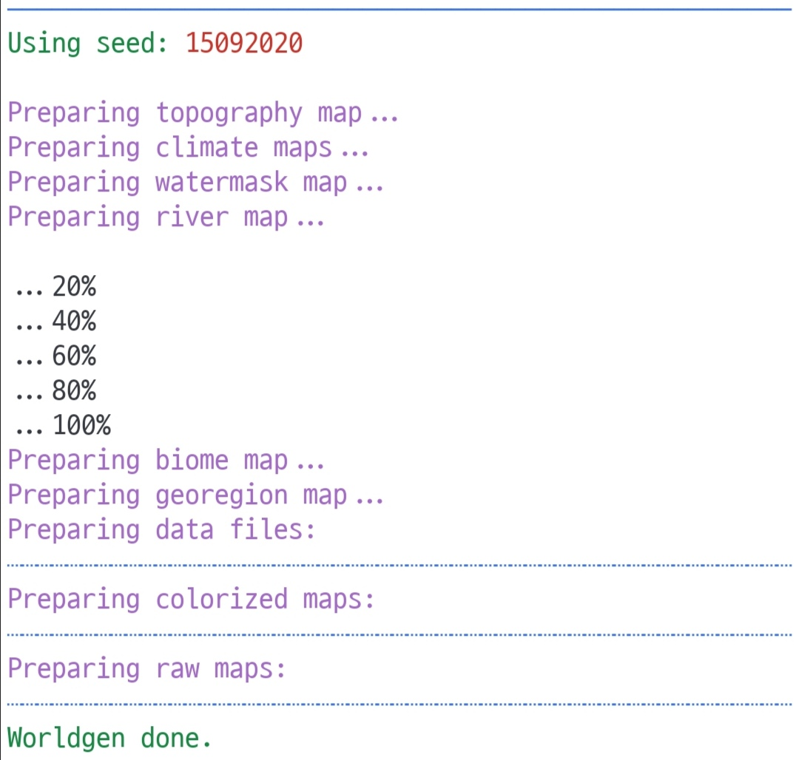

This Month in Rust GameDev #21 - April 2021
Welcome to the 21st issue of the Rust GameDev Workgroup's monthly newsletter. Rust is a systems language pursuing the trifecta: safety, concurrency, and speed. These goals are well-aligned with game development. We hope to build an inviting ecosystem for anyone wishing to use Rust in their development process! Want to get involved? Join the Rust GameDev working group!
You can follow the newsletter creation process by watching the coordination issues. Want something mentioned in the next newsletter? Send us a pull request. Feel free to send PRs about your own projects!
- Rust GameDev Meetup
- gamedev.rs
- Game Updates
- Learning Material Updates
- Engine Updates
- Library & Tooling Updates
- Requests for Contribution
Rust GameDev Meetup

The fourth Rust Gamedev Meetup happened in April. It was an opportunity for developers to show off what Rust projects they've been working on in the game ecosystem. This month, we heard a talk about threading in WASM, profiling, getting a game ready for release, and much more. You can watch the recording of the meetup here on Youtube.
The meetups take place on the second Saturday every month via the Rust Gamedev Discord server, and can also be streamed on Twitch. If you would like to show off what you've been working on in a future meetup, fill out this form.
gamedev.rs
As you may have noticed, rust-gamedev.github.io (this site) got an awesome custom domain: gamedev.rs! We've been looking for a good & available domain a long time. Huge thanks to Juratech Systems for donating their domain to the Rust GameDev WG! ❤️
We've also switched to a more compact URL scheme with separate categories for the newsletter and other posts.
Discussions: /r/rust_gamedev, Twitter
Game Updates
LD48: Micronaut
 Micronaut features a deep recursive level layout
Micronaut is a small puzzle platformer by @Healthire made in 48 hours for the Ludum Dare 48 Compo. Run and jump your way through a recursive level layout to reach the end. Cross platform for native and web, with source available on GitHub.
Discussions: Twitter, ldjam.com
LD48: The Submariner
The Submariner is a minimalist action game made by @kettlecorn for the Ludum Dare 48 Compo. Dive deep into the murky depths, defend yourself with torpedoes, and try to find a way home!
The Submariner was made with the Macroquad game engine and hecs was used as the Entity-Component-System (ECS) data structure.
Click here to play the Submariner in your browser.
Discussions: ldjam.com
LD48: Depth-First Search
Depth-First Search by @LPGhatguy and @evaeraevaera is a space dogfighting game made in 72 hours for the Ludum Dare 48 Jam. Travel alone to the center of the galaxy, battling space pirates, alien eyeballs, and more.
The game was made possible by wgpu, egui, rapier, hecs, and many more Rust community libraries!
Discussions: ldjam.com, Twitter
MineWars
MineWars (Twitter, Reddit) by @jamadazi is Minesweeper reimagined as a Multiplayer Real Time Strategy!
First announced publicly last month, the project is working towards an alpha
release for public playtesting. This month's progress has been mostly internal
refactoring to be able to support networked multiplayer fully. The next steps
are to implement the remaining core game mechanics. The client implementation
may be changed to use the new bevy_ecs_tilemap crate.
Made in the Bevy Game Engine.
Fish game

Fish game is an online multiplayer game, created in a collaboration between Nakama, an open-source scalable game server, and the Macroquad game engine.
This month:
-
Fish game tutorial got published. The tutorial breaks down the game codebase into steps, from setting up an empty macroquad project into building a platformer game, and then turning it into a multiplayer game with Nakama.
-
Web build went live on itch.io
Project YAWC
Project YAWC (Twitter) is a turn-based strategy game built in GGEZ, being developed by junkmail.
April saw the release of Alpha 5, including the integrated map editor, alongside balance changes and unit additions.
An alpha access request form is available, if you want to try it out.
The Process
The new test map in The Process
The Process by @setzer22 is an upcoming game about factory building, process management and carrot production, built with Rust using the Godot game engine!
Some of the main highlights of the game:
- Automate complex processes by combining machines and programmable workers.
- Obtain materials from a wide variety of natural resources: Even chicken!
- An upbeat, wholesome aesthetic: Factories don't need to be depressing.
This last month was focused on implementing the following features:
- A test map to ensure all corners of the codebase are working
- Improved player mobility by introducing a grappling hook
The game has been in active development for over a year and is now approaching its first initial playable alpha version. Stayed tuned to the official twitter for updates!
Discussions: /r/rust_gamedev, Twitter
pGLOWrpg

pGLOWrpg (GitHub, Twitter) by @Roal_Yr is a Procedurally Generated Living Open World RPG, a long-term project in development, which aims to be a narrative text-based game with maximum portability and accessibility.
Recent updates include:
- Finished implementing new printing interface.
- Different types of text: normal, announcement, banner, etc.
- Text color scheme in separate .ron preset file.
- Text wrap implemented.
- Fallback modes for text printing implemented.
Taipo
 Click the image to play the game in your desktop browser!
Click the image to play the game in your desktop browser!
Taipo (itch.io, GitHub) by @rparrett is a Tower Defense game that's controlled solely by typing words and phrases.
Taipo is intended to be a thin veneer of a game over a tool for practicing Japanese, but there's an English mode as well. Gameplay sessions are short and the game is playable in a desktop web browser.
Taipo was built with Bevy 0.5 with web builds made possible by bevy_webgl2 and bevy_kira_audio. Taipo is also supported by these great projects: bevy_tiled, bevy_asset_ron.
A/B Street
A/B Street by @dabreegster is a traffic simulation game exploring how small changes to roads affect cyclists, transit users, pedestrians, and drivers, with support for any city with OpenStreetMap coverage.
In April, a new road editor was prototyped, letting the number and width of lanes be changed. Initial installation and downloading new maps is now simpler. Slowly, complex intersections are being handled better. The team also completed four usability study sessions and adjusted the UI accordingly.
Way of Rhea

Way of Rhea is a picturesque puzzle platformer—without the platforming. Solve mind bending color puzzles, unlock new areas of a vibrant hub world, and talk to NPCs to unravel the mysteries of a world you left behind!
Way of Rhea is being produced by @masonremaley. Latest Way of Rhea developments:
- A hierarchy tree view was added to the editor to make getting art into the game easier.
- Work is wrapping up getting art into the first snow crab level!
- @masonremaley wrote up an article walking through how the Way of Rhea crash reporter works.
- @masonremaley is mixing signed distance fields, bézier curves, and art by Carolyn Whitmeyer to create procedural vines.
- Carolyn Whitmeyer, the game's artist, released a demo real including some content from Way of Rhea.
Veloren
A mist rolling over the land
Veloren is an open world, open-source voxel RPG inspired by Dwarf Fortress and Cube World.
In April, work started on 0.10. Work is being done on combat, with new models being created for enemies, animations being refined, and new player gear being added. The trading and economic systems have continued progress at a good pace. The music system was expanded to support combat music.
Veloren's financial state was overhauled to examine previous expenses, and prepare for provisioning the dedicated server. Functionality was added to switch between server-authoritative and client-authoritative physics. Skeletons for big-winged creatures were added. Data being sent over the network is being optimized to reduce the amount of bandwidth players have to use.
April's full weekly devlogs: "This Week In Veloren...": #114, #115, #116. #117.
Outer Wonders
Outer Wonders is a colorful, pixel art, puzzle-based adventure game developed by Utopixel where you play as Bibi, a cute round monkey who enjoys rolling in straight lines. Explore a whimsical nature where altering the environment is key to progress, and solve puzzles to protect its wonders.
In April, Utopixel released the first playable demo of Outer Wonders for Windows and Linux on itch.io! In order to achieve this, the Utopixel team:
- Added a cutscene and a tutorial level at the beginning of the demo campaign.
- Integrated sound effects for interaction with the environment and the UI.
- Finished implementing full support for Linux on itch.io through a portable build of the game.
- Polished the menus by adding a "Press any key to continue" prompt on game startup, as well as a confirmation prompt for all quit buttons.
- Tested the demo thoroughly on both Windows and Linux to fix all bugs and level design issues.
Theta Wave
 Mobs may now be spawned in predefined formations
Mobs may now be spawned in predefined formations
Theta Wave is an open-source space shooter game by developers @micah_tigley and @carlosupina. It is one of the showcase games for the Amethyst Engine. In the past month, the "Formations" update was released which organized how mobs are spawned in different phases of the level.
They are now working on the "Loot" update which will enhance how loot drops are rolled, spawned, and how their effects are applied to the game.
Station Iapetus
Station Iapetus by @mrDIMAS is a 3rd person shooter on the prison Iapetus near Saturn. This month's updates include:
- New level (lab)
- More assets
- Performance improvements
- Bots now able to use weapons
- Melee attacks are much harder to avoid now
- Bots drop items
- Journal
Engine Updates
macroquad
macroquad is a cross-platform (Windows/Linux/macOS/Android/iOS/WASM) game framework built on top of miniquad.
This month macroquad finally got out of alpha and 0.3 got released!
All the examples with both sources and interactive wasm versions may
be found on the new macroquad website.
Tetra
Tetra is a simple 2D game framework, inspired by XNA, Love2D, and Raylib. This month, version 0.6.3 was released, featuring:
- BMFont support
- An
ImageDatatype for loading and manipulating images on the CPU - More color utilities, including shortcuts for premultiplied alpha
- Bugfixes and docs improvements
For more details, see the changelog.
Additionally, Tetra's website has been updated to make it easier to read and contribute to. The site features tutorials, guides and FAQs on how to use Tetra effectively, as well as a showcase of cool projects made using the framework - additions are welcomed!
Oxygengine v0.19.1
 Making splash screens in Oxygengine with RAUI
Making splash screens in Oxygengine with RAUI
Oxygengine by @PsichiX is the hottest HTML5 + WASM game engine for games written in Rust with web-sys. The goal of this project is to combine professional game development tools under one highly modular toolset.
This month's changes include:
- Fixed bugs with rendering images on Firefox browser.
- Added support for filters.
- Updated RAUI dependency to improve UI.
- Added support for image smoothing render command.
- Added puzzle game demo WIP that shows how to use RAUI to make for example fancy splash screens with RAUI.
rg3d
rg3d (Discord, Twitter) is a game engine that aims to be easy to use and provide a large set of out-of-box features. Some of the recent engine updates:
- WebAssembly support (check online demo)
- Proc-macro for Visit trait
- On-demand texture compression
- Performance improvements
- Various bug fixes and small improvements.
Arcana
A demo Arcana game
Arcana is a new game engine built with focus on ease of use without compromising on level of control. The engine is aimed to support a wide variety of games, from pixel-art to fully ray-traced, from single-player puzzles to online strategies.
It is at a very early stage, not all necessary subsystems are done and code is in flux.
The demo shown above was coded in a single evening, together with sprite sheet loading and sprite animations which will be integrated into the engine later.
The default 2D renderer renders sprites with auto-batching,
so all sprites are rendered in single instanced draw call,
allowing rendering millions of sprites in one frame. Rendering
is done with sierra - a Vulkan-like graphics API with
batteries included. The engine also uses hecs as its ECS,
and rolls its own simplistic System trait to define and run
systems, once per frame or with fixed steps. rapier physics
is integrated for 2D cases, but this system is kept opt-in.
Learning Material Updates
Bevy Cheatbook
The Unofficial Bevy Cheatbook by @jamadazi is a practical book for learning the Bevy Game Engine.
The book recently got an assortment of improvements and new content, including a detailed page about input handling and a chapter about browser games using WASM (written with help from @Zaszi).
The author now has a GitHub Sponsors, support them!
Shooting Gallery Game in Rust and Bevy in 5 Hours
@camsjams released a video about developing a shooting gallery using Bevy to demonstrate 2D games with multiple layers of depth. Some of the features covered in the video:
- Basic UI with score and countdown clock.
- 2D shooting with moving set pieces - clouds, grass, water.
- Tracking of target hits, each target having their own unique movement speed and points.
- Game over state when clock runs out.
The full source is available here.
Learning OpenGL in 7 days using Rust
TanTan released a video about making a water shader, loading 3D models, creating a beautiful transition shader using glium and macroquad. The water & transition shader is open source and can be found here.
Rust Linz: Learning Rust with Game Development
Click on the image to watch the talk
As part of April's Rust Linz meetup, Herbert Wolverson gave a talk about using game development as a means of learning Rust, stepping through the creation of Flappy Dragon - a simple game used in his book 'Hands-On Rust' to teach the language basics.
'Hands-On Rust' is currently available for 50% off, via a coupon posted on the author's twitter.
Rust LA Meetup: Happiness in Rust
Click on the image to watch the talk
As part of April's Rust LA meetup, Andrea Pessino from Ready at Dawn gave a talk examining how to increase Rust adoption among game developers and performance-centric developers, giving practical, actionable advice to those who hit early bumps in their Rust discovery.
How To Write a Crash Reporter

@masonremaley wrote an article walking through Way of Rhea's crash reporter implementation.
The article covers how to detect a crash, how to report a crash via chat services like Discord or Slack, and how to implement a robust native UI on Windows to handle requesting user consent to file the report, as well as some design considerations.
awesome-quads
awesome-quads is a curated list of links to miniquad/macroquad-related code & resources: libraries & plugins, games, examples, apps, docs, etc. The list has more than 40 links atm: feel free to write a PR if something isn't mentioned yet.
Library & Tooling Updates
wgpu-0.8

wgpu is a WebGPU implementation in Rust. It is safe, efficient, and portable: can target both native (Vulkan/D3D/Metal) and the Web.
The team has rolled out gfx-hal-0.8 and wgpu-0.8 updates on crates! Read gfx-release-blog for more details.
In April, the team implemented more validation on both the host and the shader sides. Naga's coverage of SPIR-V and MSL features is also greatly improved.
On the infrastructure side, wgpu integrated profiling and got the first naga performance numbers, which looked promising.
nalgebra

nalgebra (GitHub, Discord) by Dimforge is a general-purpose linear-algebra library.
With its version 0.26, nalgebra replaced the use of generic-arrays by regular Rust arrays using const-generics. See the blog-post to get all the details! In particular, this results in significant benefits:
- Simpler generic programming with statically-sized vectors/matrices.
- Much simpler debugging: inspect the content of vectors/matrices more easily.
- Vectors and matrices with dimensions known at compile-time can be constructed in a const-fn context.
opensubdiv-petite
Low poly car with three levels of Catmull-Clark subdivision applied.
Opensubdiv-petite is a high level, selective, oxidized wrapper around Pixar’s OpenSubdiv sudivison surface meshing and evaluation library. OpenSubdiv allows for real time updates of the subdivided mesh if the topology of the control mesh is stable (e.g. a deforming character in a game).
The crate comes with a trait for converting into a bevy::Mesh and a bevy example.
This is an early release. None of the GPU acceleration backends are yet exposed on the Rust side. Contact @virtualritz is you want to help out with that.
His tobj fork also has a bunch new features that help loading OBJ files for
use with opensubdiv-petite. E.g. merging disconnected vertices during import.
The car model above was borrowed from @quaternius low poly car collection on itch.io.
profiling
{kind=link}
This month, version 1.0 of profiling was released on crates.io. üéâ üéâ
This crate provides a very thin abstraction over instrumented profiling crates
like puffin, optick, tracing, tracy, and superluminal-perf.
Profiling is used by multiple projects including gfx-hal, rafx, and
wgpu.
simple-async-local-executor
let executor = Executor::default();
let events = [executor.create_event_handle(), executor.create_event_handle()];
async fn wait_event(events: [EventHandle; 2], executor: Executor) {
executor.event(&events[0]).await;
executor.event(&events[1]).await;
}
executor.spawn(wait_event(events.clone(), executor.clone()));
assert_eq!(executor.step(), true);
assert_eq!(executor.step(), true);
executor.notify_event(&events[0]);
assert_eq!(executor.step(), true);
executor.notify_event(&events[1]);
assert_eq!(executor.step(), false);
simple-async-local-executor by Enlightware is a single-threaded polling-based executor suitable for use in games, embedded systems or WASM.
This executor can be useful when the number of tasks is small or
if a small percentage is blocked. Being polling-based, in the general
case it trades off efficiency for simplicity and does not require any
concurrency primitives such as Arc, etc.
wasm_plugin
wasm_plugin by @alec-deason is a low-ish level tool for easily hosting WASM based plugins for modding or scripting.
The latest version now supports calling host functions from the plugin and more flexible serialization which allows plugins to be written in languages other than Rust.
It consists of two crates:
- wasm_plugin_host which wraps a wasmer instance with methods for calling functions on the guest plugin.
- wasm_plugin_guest which provides an attribute macro to easily import and
- export functions to the host.
egui
egui by @emilk is an easy-to-use immediate mode GUI library in pure Rust.
This month version 0.11 of egui was released, with many improvements, including optimized to run almost twice as fast!
You can try out egui in the online demo.
bevy_egui

bevy_egui provides an Egui integration for the Bevy game engine. It supports bevy_webgl2 and implements the full set of Egui features (such as clipboard and opening URLs).
In April, version 0.4 was released, providing an integration with Egui 0.11 and implementing multiple windows support.
Try out the online demo.
puffin_egui

puffin_egui by @emilk is an easy-to-use integration of the puffin profiler for the egui GUI library.
It has never been easier to add an in-game flamegraph profiler to your game!
rafx
Rafx WebGL 1.0 support, click for live demo!
Rafx is a multi-backend renderer that optionally integrates with the distill asset pipeline. This month, frustum culling and a new OpenGL ES 2.0/WebGL 1.0 backend were added.
@dvd revived the rafx-visibility crate and implemented frustum culling.
Frustum culling greatly reduces draw call counts, improving frame rate
in certain scenes. The changes also improve consistency between various
rendering feature implementations (i.e. meshes, text etc.) and avoids running
the extract-prepare-submit pipeline on entities that are not visible.
@aclysma implemented an OpenGL ES 2.0 backend. While ES2 cannot support all
functionality in rafx-api, it provides very broad compatibility. This means
the core functionality of rafx-api can be used with almost any mobile device
or browser (~98% web coverage.)
RAUI v0.34.0
 RAUI Scroll Box
RAUI Scroll Box
RAUI by @PsichiX is a Renderer Agnostic User Interface crate that is based on declarative mode UI composition similar to React.js and UE4 Slate system.
This month's changes include:
- Moved from
widget_hooks!andwidget_component!to#[pre_hooks]and#[post_hooks]macros. - Added
PropsDataandMessageDataderive macros. - Improved support for Scroll Box widgets to allow frictionless usage.
- Added use of Scroll Box in TODO demo app to demonstrate how to use it.
Graphite
Ferris drawn in Graphite using the new drawing tools - Art credit: Uriopass
Graphite (GitHub, Discord, Twitter) is an in-progress vector and raster graphics editor built on a nondestructive node-based workflow.
The team size has doubled in the past month — thank you to the new contributors! Since then, systems related to editor tools and data flow were added. The editor now has proper input behavior on the existing Rectangle and Ellipse Tools plus the new Shape and Line Tools while holding modifier keys. Pen Tool implementation has begun, supporting polylines. Shapes are now drawn with live previews.
Additional work has gone into improving render performance, building the color system in the Rust backend, and adding initial support for displaying shapes in the Layer Tree panel. Try it right now in your browser.
Graphite is making rapid progress towards becoming a nondestructive, procedural graphics editor suitable of replacing traditional 2D DCC applications. Please join the Discord - and consider asking for a tour of the code and how you can help!
KindNES

KindNES by @henryksloan is a new NES emulator that supports sound, controllers, and much of the NES library.
KindNES is designed to strike a balance between performance, hardware accuracy, and code clarity. It directly emulates the CPU, graphics, and sound of the NES with minimal approximation. The code is intended to pair well with the NESdev wiki as a resource for learning about the NES.
KindNES is in a playable state, and is approaching a release version. Features planned before release include saving and an improved cross-platform GUI.
chip-8-rs
 Debugging Pong
Debugging Pong
Chip-8-rs by @jonathanmurray is a CHIP-8 emulator with some basic debugging functionality.
When running a game through the emulator, CHIP-8 instructions are listed next to the main display, with the currently executed one highlighted. By running at a very low clock-frequency (and pausing/resuming) you can step through a program one instruction at a time, to better understand how it works (or doesn't work!).
See it in action on YouTube.
Requests for Contribution
- femtovg is looking for help with the wgpu backend.
- Embark's open issues (embark.rs).
- gfx-rs's "contributor-friendly" issues.
- wgpu's "help wanted" issues.
- luminance's "low hanging fruit" issues.
- ggez's "good first issue" issues.
- Veloren's "beginner" issues.
- Amethyst's "good first issue" issues.
- A/B Street's "good first issue" issues.
- Mun's "good first issue" issues.
- SIMple Mechanic's good first issues.
- Bevy's "good first issue" issues.
That's all news for today, thanks for reading!
Want something mentioned in the next newsletter? Send us a pull request.
Also, subscribe to @rust_gamedev on Twitter or /r/rust_gamedev subreddit if you want to receive fresh news!
Discuss this post on: /r/rust_gamedev, Twitter, Discord.